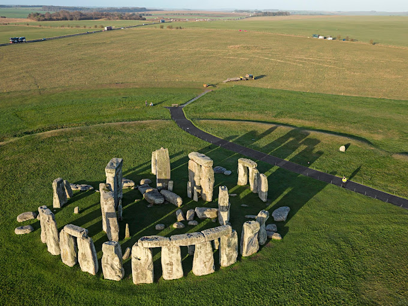
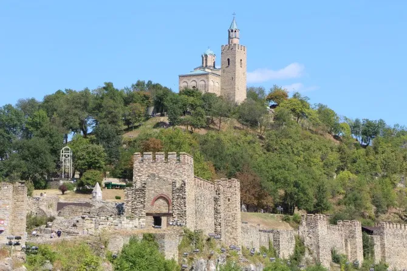

-
Stonehenge - Reino Unido
Stonehenge é uma estrutura composta, formada por círculos concêntricos de pedras, que chegam a ter 5 metros de altura e a pesar quase 50 toneladas, localizada na Inglaterra, no condado de Wiltshire, na Planície de Salisbury.
 -
Vigeland Park - Oslo
O Vigeland Park está para Oslo como o Central Park para Nova Iorque. o Vigeland Park, em Oslo, capital da Noruega, é especial. São mais de 300 mil metros quadrados de espaço verde, cuidadosamente ornamentado por esculturas em tamanho natural, que contam a história da humanidade. O idealizador do parque, Gustav Vigeland, dedicou, praticamente, toda a sua vida à obra, que hoje é o maior motivo de orgulho da cidade.

-
Fortress Tsarevets - Bulgaria
O castelo é o cartão postal de Veliko Tarnovo. Antiga casa dos czares medievais, o Fortress Tsarevets é a principal atração da cidade. A fortaleza teve seu auge durante o Segundo Império Búlgaro, mas foi saqueada e destruída durante a invasão turca em 1393. Os comunistas é que reconstruíram os prédios que podemos visitar hoje.
